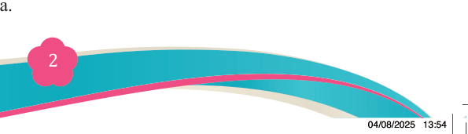
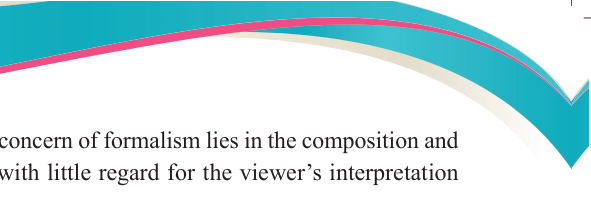

and principles of art. The central concern of formalism lies in the composition and
visual qualities of the artworks with little regard for the viewer’s interpretation

or emotional response.
The aesthetic value of an artwork is assessed based on its formal qualities, including
line quality, colour, texture, composition, balance, proportion and harmony. The arrangement and interaction of these elements play a crucial role in defining the
artwork’s effectiveness. Formalism maintains that an artwork’s beauty or value is
derived from the skilful application of these elements, regardless of any underlying
symbolic or narrative content.
Types of formalistic artworks
Formalistic artworks have a range of types that include decorative, symbolic and abstract, as detailed below:
(a) Abstract art: This kind of art focuses more on form, shape, colour and line
interactions rather than on representational narrative content. Figure 1.1 shows
a sample of abstract paintings based on the formalistic theory of art.
Figure 1.1: Image portraying an abstract painting art
Source:https://www.afrum.com/index.php?categ=fam&action=vypis&select=49
(b) Decorative art: This kind of art utilizes form and colour to enhance aesthetics
without narrative. It is produced specifically to enhance attraction and beautifying
the area where it is placed or done. Figure 1.2 shows an example of decorative
Tingatinga art from Tanzania.